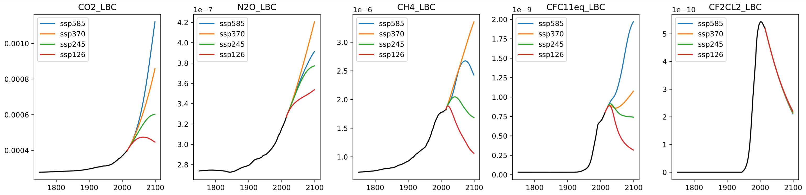
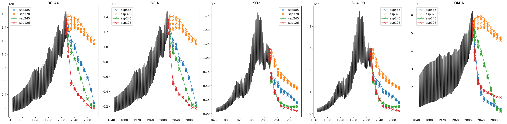

ClimX
Extreme-aware climate model emulation
Build fast, accurate machine learning emulators for the NorESM2-MM Earth System Model and quantify tail risks in future climate projections.
Supported by ESA Phi-lab. Deterministic and uncertainty-aware submissions are hosted on separate Kaggle competition pages.
What is ClimX?
A benchmark built for the question that matters: how will extremes change?
Motivation
Earth System Models (ESMs) are our best tools to study climate futures, but they are computationally expensive. This limits how densely we can explore uncertainty (scenarios, initial conditions, and model structure) and makes it hard to answer policy-relevant questions about rare but high-impact events.
Climate emulators are lightweight surrogates that approximate ESM outputs, enabling rapid experimentation and risk assessment.
The task
Build a model that predicts daily 2D maps of climate variables at NorESM2-MM resolution, driven by forcing trajectories and, optionally, past climate state.
Training: historical (1850–2014) + SSP1-2.6, SSP3-7.0, SSP5-8.5 (2015–2100). Testing: held-out SSP2-4.5 (2015–2100).
Data and access
Two-tier distribution: full-resolution training on Hugging Face, lightweight prototyping on Kaggle
Use the same benchmark data for both Kaggle competitions: the deterministic main track and the separate UQ track.
Hugging Face (full)
172GB, full resolution (NetCDF)
- Best for: full-resolution training and final model development
- Format: Zarr (streamable / chunked)
- Includes: historical + training SSP targets and forcings; SSP2-4.5 test forcings (no targets)
- Historical:
(lat: 192, lon: 288, time: 60224) - Projections:
(lat: 192, lon: 288, time: 31389)
Kaggle (lite)
800Mb, 16× spatially coarsened lite (debug)
- Best for: fast prototyping and validating end-to-end pipelines
- Format: competition “Data” bundle (lightweight exports)
- Same task: same variables and split logic, at reduced spatial resolution
- Competitions: deterministic submissions go to the main track, probabilistic submissions go to the UQ track
- Historical:
(lat: 12, lon: 18, time: 60224) - Projections:
(lat: 12, lon: 18, time: 31389)
Inputs
Forcing variables include greenhouse gases (global) and aerosols (spatial). Aerosol inputs are temporally sparse for some scenarios, and are interpolated to monthly values.


Targets
Your emulator can predict daily 2D maps (192×288) of 7 variables (useful for diagnostics and for computing extremes):
| Variable | Description | Units |
|---|---|---|
tas | Near-surface air temperature | K |
tasmax | Daily max near-surface air temperature | K |
tasmin | Daily min near-surface air temperature | K |
pr | Precipitation | kg/(m² s) |
huss | Near-surface specific humidity | kg/kg |
psl | Sea level pressure | Pa |
sfcWind | Near-surface wind speed | m/s |
Submission rule: your model must emulate these daily target variables first. Direct prediction of the leaderboard indices is not allowed.
Benchmark target: the leaderboard score is computed on 15 extreme indices derived from daily temperature and precipitation.
Evaluation focused on extremes
Because averages hide risk: extremes determine impacts
Primary score
Models are scored on 15 derived extreme indices using the region-wise normalized Nash–Sutcliffe efficiency (nNSE). Cell-level \(R^2\) is transformed via \(\mathrm{nNSE}_{ij} = R^2_{ij}/(2-R^2_{ij})\), mapping \(R^2\) to \((-1,1]\). Regional scores are area-weighted over AR6 land regions and then averaged uniformly:
The uncertainty-quantification track is hosted separately on Kaggle and evaluates probabilistic submissions with the analogous CRPS-based regional score.
Why indices?
Indices convert daily fields into impact-relevant summaries: how hot the hottest day gets, how long droughts persist, how much rain falls during the wettest multi-day event, and how the fraction of rainfall from extremes changes.
Why nNSE?
Using nNSE instead of a raw error ensures the score is bounded, physically interpretable, and comparable across indices with different units and scales.
The 15 indices and the questions they answer
Temperature extremes
- TXx, TNn: hottest day / coldest night intensity (heatwaves, cold snaps)
- SU, TR: frequency of hot days and hot nights (human thermal stress)
- FD, ID: frost and ice days (ecosystems and agriculture)
- WSDI, CSDI: warm/cold spell duration (persistence of extremes)
- GSL: growing season length (shifts in crop calendars)
Precipitation extremes
- Rx5day: intensity of multi-day rainfall events (flood risk)
- CDD, CWD: dry/wet spell persistence (drought and prolonged wet periods)
- R95pTOT: share of rainfall from very wet days (tail-dominated precipitation regimes)
- R10mm, SDII: frequency and intensity of heavy rain (infrastructure design)
- Use only the data provided by the organizers for training (no external CMIP6 data; no models pre-trained on CMIP6).
- Submit predictions via Kaggle: the main track is hosted at ClimX and the UQ track is hosted at ClimX UQ Track.
- Teams are limited to 10 members (team merges allowed up to one month before the deadline).
- Organizers may run validity checks and request training/inference code and weights; suspicious entries may be temporarily removed while being reviewed.
- Your emulator must output the daily target variables first; the submitted indices must be computed from those outputs rather than predicted directly.
- To be eligible for prizes and final ranking, top-ranked participants must open-source code and weights under an MIT or Apache-2.0 license.
Timeline
Proposed schedule for the NeurIPS 2026 ClimX challenge
Tutorials and starter resources
Everything needed to get from data access to a valid submission
Starter kit
Clone the public repository for loaders, baselines, metrics, and submission templates for both tracks.
Kaggle walkthrough
Use the Kaggle competition page and notebooks for lite-data prototyping, submission formatting, and public leaderboard checks.
Full-data training
Use the Hugging Face dataset page for full-resolution training artifacts and access instructions.
- Start with the lite dataset on Kaggle to validate loading, training, and submission code end to end.
- Reproduce one of the provided baselines before scaling to the full dataset.
- Use the public evaluation code to verify index computation and file formatting before your first submission.
- Move to the Hugging Face full dataset only after the lite pipeline is stable.
FAQ
Common participant questions, with the operational details collected in one place
Q: What exactly is the prediction task?
A: You build an emulator for daily NorESM2-MM surface fields at about 1-degree resolution. The model predicts 7 daily variables: tas, tasmax, tasmin, pr, huss, psl, and sfcWind. Those daily fields are then converted into the 15 climate-extreme indices used for ranking.
Q: What are the official train and test splits?
A: The official training data are historical (1850-2014) plus SSP1-2.6, SSP3-7.0, and SSP5-8.5 (2015-2100). The held-out test scenario is SSP2-4.5. Only the SSP2-4.5 forcings are released publicly; the targets are withheld for evaluation.
Q: Can I train directly on the 15 leaderboard indices?
A: No. Direct index prediction is not allowed. Your model must first output the daily target fields, and the submitted indices must be computed from those fields. This avoids metric-specific shortcuts and preserves spatial and cross-variable consistency.
Q: Can I use external climate or weather datasets or pretrained models?
A: No. External CMIP6 data and models pretrained on other climate or weather data are prohibited for the competition. Use only the data released for ClimX and standard open-source ML tooling.
Q: Which track should I enter?
A: Use the main track if your goal is to compete on the primary challenge ranking and win ClimX overall, since the official winning teams are determined from the main deterministic leaderboard. Use the UQ track if your model outputs predictive distributions and you specifically want to be ranked with the CRPS-based uncertainty metric.
Q: What is the recommended development workflow?
A: Start with the lite Kaggle dataset to debug your pipeline end to end, reproduce one of the provided baselines from the starter kit, validate your submission formatting with the public evaluation code, and only then move to the full-resolution dataset.
Q: How are submissions ranked?
A: The main track is ranked by region-wise normalized Nash-Sutcliffe efficiency (nNSE), averaged across 15 extreme indices and AR6 land regions. The UQ track follows the same aggregation structure but replaces MSE with CRPS. See the Climpact index definitions for the underlying climate metrics.
Q: Which indices are included?
A: ClimX uses 15 indices spanning temperature and precipitation extremes: FD, SU, ID, TR, GSL, TXx, TNn, WSDI, CSDI, Rx5day, CDD, CWD, R95p, SDII, and R10mm. The intent is to reward models that capture impact-relevant extremes rather than only mean fields.
Q: What baseline models and references are available?
A: The repository includes Climatology, LPS, FFNN, and GNN baselines. You can browse generated reports from the Climatology, LPS, FFNN, and GNN pages, or compare them on the model comparison page.
Q: What will organizers request from top teams?
A: Finalists may be asked for inference code, training code, weights, environment details, and a short model card. The reproducibility package must run on at most one modern accelerator or equivalent CPU resources, use no more than 80GB of accelerator memory and 256GB of system RAM, and complete organizer-side inference within 24 hours.
Q: How do you prevent cheating or leaderboard overfitting?
A: The competition uses a held-out SSP2-4.5 scenario, restricted data usage, organizer-side review of suspicious entries, and re-evaluation of finalist submissions. Teams that cannot pass reproducibility checks are not eligible for prizes or final ranking.
Q: Are there prizes or workshop presentations?
A: Yes. ESA Phi-lab sponsors the challenge with awards for the top three main-track teams (€1,000, €500, and €300), partial travel support of up to €500 per winning team, certificates, and speaking slots at the NeurIPS 2026 workshop.
Q: Where should I ask questions or report issues?
A: Use GitHub issues for starter-kit bugs and documentation clarifications, the Kaggle discussion forum for competition questions, and email for private matters such as reproducibility or eligibility questions.
Contact
Organizer support channels for participants and reviewers
Email the organizers
Use email for private questions, reproducibility issues, or anything that should not be posted publicly.
Public discussion
Use issues for starter-kit bugs, documentation fixes, and technical clarifications that can help other teams.
Competition updates
Timeline changes, FAQ updates, and competition announcements will be mirrored on the website and Kaggle pages.
Get started
From zero to a valid submission
Download data
Use ClimX-lite on Kaggle for quick iteration or download the full dataset on Hugging Face for full-resolution training.
Train an emulator
Start from the provided baselines and improve speed, accuracy, and extreme fidelity.
Submit on Kaggle
Compute the required indices from your emulator outputs, then submit to the deterministic or UQ Kaggle competition.
ESA Phi-lab sponsors the challenge prizes and travel support for the winning teams.